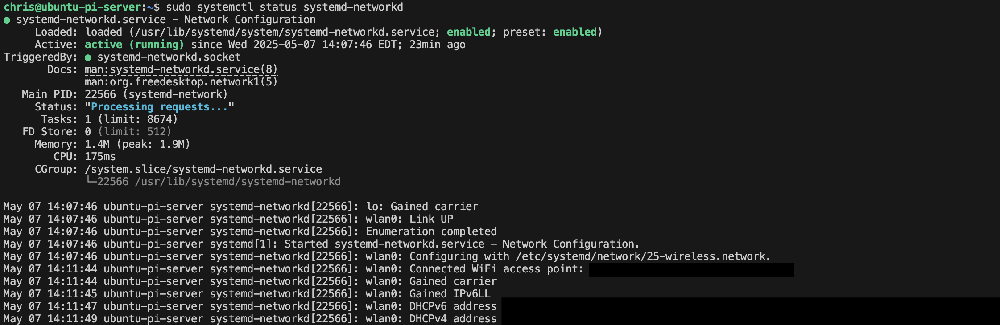
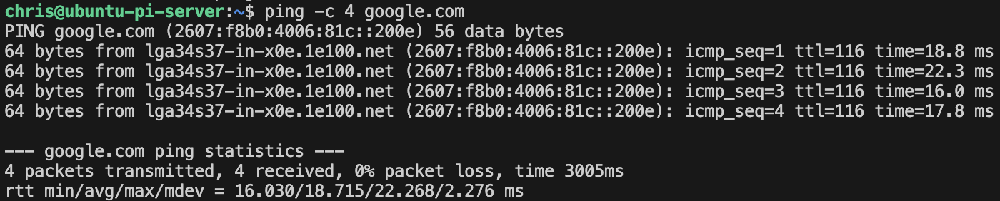
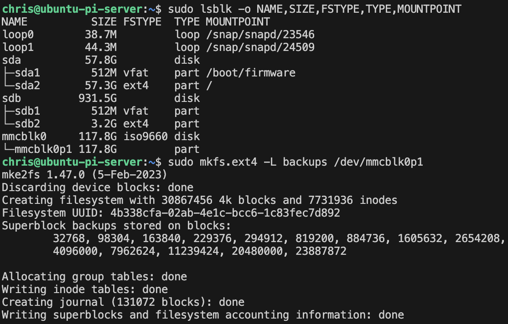

Guide to Setting Up Raspberry Pi for Data Engineering and Virtualization Projects
Introduction
This guide provides step-by-step instructions and explanations for configuring a Raspberry Pi 4 to learn about hardware, servers, containerization, and self-hosting principles. To be clear, this guide is not-exhaustive and I’m sure there were areas I made mistakes or misunderstood a topic. I’m inviting (encouraging) you to let me know! You can submit an issue via GitHub on the guide on my website. That being said, the primary purpose of this guide is so that I can go back and reference what I previously did, as well as understand the thought process, when I need to troubleshoot or recreate something. The secondary purpose is to provide a helpful resource for others in a similar situation to me, because I struggled to find the sort of comprehensive document I’m aiming to create.
Back to this guide, eventually I’d like to setup an actual server cluster and self-host some interesting, more resource-intensive applications. Before I make that kind of commitment, I wanted to learn the basics and see if this is something I would enjoy– the good news, I learned I do. The great news, Raspberry Pi makes their hardware very affordable and easy to purchase. Here’s the official webpage for the exact computer I bought.
It’s worth adding, I bought the 8GB Raspberry Pi 4. The price difference isn’t that great, but the performance is between the lesser 2GB and 4GB models. Additionally, because I’m planning to host and experiment with CI/CD, I also bought a case and cooling fan to help with longevity. All in, the base price for that (with the power supply and HDMI cable) is $107.30 before taxes, shipping, and other fees.
Starting from (close) to Zero
Hardware Requirements
This section will provide basic setup instructions, so you’ll have the same tools I do and can follow along with this guide, step-by-step.
- Raspberry Pi 4 8GB
- Micro HDMI to HDMI cord (for direct access)
- Appropriate Power Supply
- Keyboard (connected via USB for direct access)
- 1TB Samsung T7 SSD (connected via USB for boot media/core memory)
- Amazon Basics 128GB microSD card (or other microSD cards for backups media)
- SSH-capable devices for headless access
- I’m using a MacBook Air
- I prefer the MacOS and Terminal for personal development, because I use Windows at my day job
Image requirements
Once you have your hardware ready to go, you can being setting up the software. I’m using Linux Server LTS because it’s a stable version of Linux intended for headless, server environments. LTS means long-term support, so unlike the more frequently updated versions, these OS versions are supported for 5 years. Additionally, you’ll want to use public-key authentication for better security purposes, but more on that in the SSH Section.
Have your SSD ready and able to connect to either a laptop or desktop (whichever you plan to use with SSH)
Download Raspberry Pi Imager from the official website
Run the Imager and configure your installation of the most recent Linux Server LTS image
- Select your Raspberry Pi device

- Select the OS Image you want to flash

- Select the media storage device for the image

- Configure settings
 Here, you’ll configure your primary user ID and password; network connection; locale and timezone; and your hostname (the nickname your computer remembers the IP address as).
Here, you’ll configure your primary user ID and password; network connection; locale and timezone; and your hostname (the nickname your computer remembers the IP address as). Here, you’ll configure your SSH settings. You should probably use public-key authentication only when dealing with SSH in your leave, but for learning purposes, you don’t need to at this time. Later on in this guide, I’ll walk you through the steps to manually configure SSH, if you are unfamiliar.
Here, you’ll configure your SSH settings. You should probably use public-key authentication only when dealing with SSH in your leave, but for learning purposes, you don’t need to at this time. Later on in this guide, I’ll walk you through the steps to manually configure SSH, if you are unfamiliar. These are more preference based, but it’s nice to have the storage device automatically eject once the flashing is complete. Then, you just need to unplug it and plug it into your Raspberry Pi to get going.
These are more preference based, but it’s nice to have the storage device automatically eject once the flashing is complete. Then, you just need to unplug it and plug it into your Raspberry Pi to get going.
Get Started
Now you’re ready to plug your boot media device (the SSD) into your Raspberry Pi. You should also connect a keyboard, monitor, and power supply. Once all of this is connected, your Raspberry Pi will boot up. Connecting a monitor and keyboard will allow you to directly interact with the system’s terminal. Ideally, you’ll use SSH, but it may be helpful to have direct access in case there are any network issues.
When first connecting from the wired keyboard and monitor, let all of the start up processes finish running (these will hopefully have brackets with the word Success in green). Then, type in the name of the User ID you wish to login with, in my case it’s chris. Then, enter the password (no characters will show up as you type it in) and hit enter. You’ll see a plaintext message telling you the OS version, some system information (memory usage, temperature, etc.), and you’ll see a line where you can enter commands (the CLI). In my case, it looks like this: chris@ubuntu-pi-server:~$
Now you can run some basic commands to see where you are and what you have available to you. Spoiler alert, you’re in your home directory and have no files. In my case it’s /home/chris, where the /home directory is owned by root and /chris is owned by my user– UID 1000 (the default for new users on a fresh system/image). Right now your directory will be empty, outside of some hidden folders like .ssh. More on this later.
Next we’ll cover what happened during the boot process, the basic structure of the Linux Server OS, and some important information related to permissions, before we move on to basic networking concepts and configurations.
Linux Server Basics
First Boot Process
When you first boot a fresh Ubuntu Server LTS image on your Raspberry Pi, several important initialization processes occur that don’t happen during subsequent boots. The first boot of your Ubuntu Server LTS on the Raspberry Pi is fundamentally different from subsequent boots because it performs one-time initialization tasks. While later boots will simply load the configured system, this first boot sets up critical system components.
- Hardware Detection: The system performs comprehensive hardware detection to identify and configure your Raspberry Pi’s components.
- Initial RAM Disk (initrd): The bootloader loads a temporary filesystem into memory that contains essential drivers and modules needed to mount the real root filesystem.
- Filesystem Check and Expansion: On first boot, the system checks the integrity of the filesystem and often expands it to utilize the full available space on your SSD.
- Cloud-Init Processing: Ubuntu Server uses cloud-init to perform first-boot configuration tasks (the processes you see running on the monitor on startup)
- Setting the hostname
- Generating SSH host keys
- Creating the default user account
- Running package updates
- Machine ID Generation: A unique machine ID is generated and stored in /etc/machine-id.
- Network Configuration: The system attempts initial network setup based on detected hardware.
The key difference is that subsequent boots skip these initialization steps since they’ve already been completed, making them significantly faster.
Service Management with systemd
Systemd is the modern initialization and service management system for Linux. It’s responsible for bootstrapping the user space and managing all processes afterward. Key components of systemd include:
- Units: Everything systemd manages is represented as a “unit” with a corresponding configuration file. Units include:
- Service units (
.service): Define how to start, stop, and manage daemons - Socket units (
.socket): Manage network/IPC sockets - Timer units (
.timer): Trigger other units based on timers - Mount units (
.mount): Control filesystem mount points
- Service units (
- Target units: Represent system states (similar to runlevels in older systems)
multi-user.target: Traditional text-mode systemgraphical.target: Graphical user interfacenetwork.target: Network services are ready
For example, let’s take a look at a generic SSH service file.
[Unit]
Description=OpenSSH server daemon
Documentation=man:sshd(8) man:sshd_config(5)
After=network.target auditd.service
Wants=network.target
[Service]
EnvironmentFile=-/etc/default/ssh
ExecStartPre=/usr/sbin/sshd -t
ExecStart=/usr/sbin/sshd -D $SSHD_OPTS
ExecReload=/usr/sbin/sshd -t
ExecReload=/bin/kill -HUP $MAINPID
KillMode=process
Restart=on-failure
RestartPreventExitStatus=255
Type=notify
[Install]
WantedBy=multi-user.targetTo break this down:
- [Unit]: Metadata and dependencies
Description: Human-readable service descriptionDocumentation: Where to find documentationAfter: Units that should be started before this oneWants: Soft dependencies
- [Service]: Runtime behavior
ExecStart: Command to start the serviceExecReload: Command to reload the serviceRestart: When to restart the serviceType: How systemd should consider the service started
- [Install]: Installation information
WantedBy: Target that should include this service
Ubuntu Server’s current standard is systemd, but previously it was SysV. A few key improvements include:
- Parallel Service Startup: Systemd can start services in parallel, improving boot times.
- Dependency Management: Systemd handles service dependencies more effectively.
- Service Supervision: Systemd continuously monitors and can automatically restart services.
- Socket Activation: Services can be started on-demand when a connection request arrives.
Managing services is easy using the command line, a crucial component of headless applications, a few examples are:
- View service status:
systemctl status ssh - Start a service:
sudo systemctl start ssh - Stop a service:
sudo systemctl stop ssh - Enable at boot:
sudo systemctl enable ssh - Disable at boot:
sudo systemctl disable ssh - View logs:
journalctl -u ssh
Understanding Your Home Directory
Now that you’ve logged in and can work on your server, you may wonder where you are and what’s there. Running pwd will return the file path of your current location. Running ls -a will show you all available files and directories in your current location. Running these, you’ll see a few things specifically for Shell configuration (your terminal/CLI):
.bash_history: Contains a record of commands you’ve executed in the bash shell. This helps with command recall using the up arrow or history command..bash_logout: Executed when you log out of a bash shell. Often used for cleanup tasks like clearing the screen..bashrc: The primary bash configuration file that’s loaded for interactive non-login shells. It defines aliases, functions, and shell behavior. When you open a terminal window, this file is read..profile: Executed for login shells. It typically sets environment variables and executes commands that should run once per login session, not for each new terminal.
# Sample .bashrc section
# enable color support of ls and also add handy aliases
if [ -x /usr/bin/dircolors ]; then
test -r ~/.dircolors && eval "$(dircolors -b ~/.dircolors)" || eval "$(dircolors -b)"
alias ls='ls --color=auto'
alias grep='grep --color=auto'
alias fgrep='fgrep --color=auto'
alias egrep='egrep --color=auto'
fi
# some more ls aliases
alias ll='ls -alF'
alias la='ls -A'
alias l='ls -CF'Beyond those, you’ll also find hidden application directories.
.cache: Contains non-essential data that can be regenerated as needed. Applications store temporary files here to improve performance on subsequent runs..dotnet: Contains .NET Core SDK and runtime files if you’ve installed the .NET development platform..ssh: Stores SSH configuration files and keys:authorized_keys: Lists public keys that can authenticate to your accountid_ecdsa&id_ecdsa.pub: Your private and public ECDSA keys (More on this in the SSH Section)known_hosts: Tracks hosts you’ve connected to previouslyssh_config: Optional configuration file for SSH connections
.sudo_as_admin_successful: A marker file created when you successfully use sudo. Its presence suppresses the “sudo capabilities” message when opening a terminal..vscode-server: Created when you connect to your server using Visual Studio Code’s remote development feature. Contains the VS Code server components. (More on this in the SSH Section).wget-hsts: Wget’s HTTP Strict Transport Security database. Tracks websites that require secure (HTTPS) connections.
The Root Filesystem
The Linux filesystem follows the Filesystem Hierarchy Standard (FHS), which defines the directory structure and contents of Unix-like systems. Here’s a breakdown of key directories:
/bin: Contains essential command binaries (programs) needed for basic system functionality. These commands are available to all users and are required during boot or in single-user mode.- Historical note: Originally separated from /usr/bin because early Unix systems had limited disk space on the root partition.
/boot: Contains boot loader files including the Linux kernel, initial RAM disk (initrd), and bootloader configuration (GRUB).- For Raspberry Pi, this contains the firmware and various boot-related files.
/dev: Contains device files that represent hardware devices. These are not actual files but interfaces to device drivers in the kernel.- Example: /dev/sda represents the first SATA disk.
/etc: Contains system-wide configuration files. The name originated from “et cetera” but is now often interpreted as “Editable Text Configuration.” Critical files include:/etc/fstab: Filesystem mount configuration/etc/passwd: User account information/etc/ssh/sshd_config: SSH server configuration
/home: Contains user home directories where personal files and user-specific configuration files are stored./lib: Contains essential shared libraries needed by programs in /bin and system boot.- On modern 64-bit systems, you’ll also find /lib64 for 64-bit libraries.
/media: Mount point for removable media like USB drives and DVDs./mnt: Temporarily mounted filesystems. This is often used as a manual mount point./opt: Optional application software packages. Used for third-party applications that don’t follow the standard file system layout./proc: A virtual filesystem providing process and kernel information. Files here don’t exist on disk but represent system state.- Example: /proc/cpuinfo shows CPU information.
/root: Home directory for the root user. Separated from /home to ensure it’s available even if /home is on a separate partition./run: Runtime data for processes started since last boot. This is a tmpfs (memory-based) filesystem./sbin: System binaries for system administration tasks, typically only usable by the root user./srv: Data for services provided by the system, such as web or FTP servers./snap: The /snap directory is, by default, where the files and folders from installed snap packages appear on your system./sys: Another virtual filesystem exposing device and driver information from the kernel. Provides a more structured view than /proc./tmp: Temporary files that may be cleared on reboot. Applications should not rely on data here persisting./usr: Contains the majority of user utilities and applications. Originally stood for “Unix System Resources.”/usr/bin: User commands/usr/lib: Libraries for the commands in /usr/bin/usr/local: Locally installed software/usr/share: Architecture-independent data
/var: Variable data files that change during normal operation:/var/log: System log files/var/mail: Mail spool/var/cache: Application cache data/var/spool: Spool for tasks waiting to be processed (print queues, outgoing mail)
The core philosophy behind this structure separates:
- Static vs. variable content
- Shareable vs. non-shareable files
- Essential vs. non-essential components
Understanding this hierarchy helps you navigate any Linux system and locate important files intuitively.
User and Group Permissions
Basics
Linux inherits its permission system from Unix, providing a robust framework for controlling access to files and directories. Understanding this system is essential for maintaining security and proper functionality of your Raspberry Pi server, as well as any Linux based system. At its core, the Linux permission model operates with three basic permission types applied to three different categories of users:
- Permission Types:
- Read (r): Allows viewing file contents or listing directory contents
- Write (w): Allows modifying file contents or creating/deleting files within a directory
- Execute (x): Allows running a file as a program or accessing files within a directory
- User Categories:
- Owner (u): The user who owns the file or directory
- Group (g): Users who belong to the file’s assigned group
- Others (o): All other users on the system
It’s not only important to know how to set permissions, but also how to view existing ones. When you run ls -l in a directory, you’ll see a detailed listing including permission information.
-rw-r--r-- 1 chris chris 1234 May 6 14:32 example.txtIn this example, the owner can read and write, while group members and others can only read. The first string of characters -rw-r–r– represents the permissions:
- First character: File type (- for regular file, d for directory, l for symbolic link)
- Characters 2-4: Owner permissions (rw-)
- Characters 5-7: Group permissions (r–)
- Characters 8-10: Others permissions (r–)
chmod
The chmod command modifies file permissions in Linux. You can use it in two ways: symbolic mode or numeric (octal) mode.
Symbolic mode uses letters to represent permission categories (u, g, o, a) and permissions (r, w, x):
# Give the owner execute permission
chmod u+x script.sh
# Remove write permission from group and others
chmod go-w important_file.txt
# Set read and execute for everyone (a=all users)
chmod a=rx application
# Add write permission for owner and group
chmod ug+w shared_document.txtEach symbol has a specific meaning:
u: Owner permissionsg: Group permissionso: Other user permissionsa: All permissions+: Add permissions-: Remove permissions=: Set exact permissions
Octal mode represents permissions as a 3-digit number, where each digit represents the permissions for owner, group, and others:
Read (r)= 4Write (w)= 2Execute (x)= 1
Permissions are calculated by adding these values:
7 (4+2+1)= Read, write, and execute6 (4+2)= Read and write5 (4+1)= Read and execute4 (4)= Read only0= No permissions
# rwxr-xr-x (755): Owner can read, write, execute; group and others can read and execute
chmod 755 script.sh
# rw-r--r-- (644): Owner can read and write; group and others can read only
chmod 644 document.txt
# rwx------ (700): Owner has all permissions; group and others have none
chmod 700 private_directoryBeyond the basic rwx permissions, Linux has three special permission bits:
setuid (4000): When set on an executable file, it runs with the privileges of the file owner instead of the user executing it.setgid (2000): Similar to setuid but for group permissions. When set on a directory, new files created within inherit the directory’s group.sticky bit (1000): When set on a directory, files can only be deleted by their owner, the directory owner, or root (commonly used for /tmp).
chown
The chown command changes the owner and/or group of files and directories. Do not change ownership in the root directories because many require specific ownership/permissions to function properly.
# Change the owner of a file
sudo chown chris file.txt
# Change both owner and group
sudo chown chris:developers project_files
# Change only the group
sudo chown :developers shared_documents
# Change recursively for a directory and all its contents
sudo chown -R chris:chris /home/chris/projectsThe flags do the following:
-R, --recursive: Change ownership recursively-c, --changes: Report only when a change is made-f, --silent: Suppress most error messages-v, --verbose: Output a diagnostic for every file processed
# Verbose recursive ownership change
sudo chown -Rv chris:developers /opt/applicationUnderstanding Permissions
Linux manages permissions through users and groups:
- Each user has a unique User ID (UID)
- Each group has a unique Group ID (GID)
- Users can belong to multiple groups
- The first 1000 UIDs/GIDs are typically reserved for system users/groups
Important files include:
/etc/passwd: Contains basic user account information- Fields: username, password placeholder, UID, primary GID, full name, home directory, login shell
chris:x:1000:1000:Chris Kornaros:/home/chris:/bin/bash/etc/shadow: Contains encrypted passwords and password policy information- Fields: username, encrypted password, days since epoch of last change, min days between changes, max days password valid, warning days, inactive days, expiration date
chris:$6$xyz...hash:19000:0:99999:7:::/etc/group: Contains group definitions- Fields: group name, password placeholder, GID, comma-separated list of members
developers:x:1001:chris,bob,aliceThere are two categories of groups you should understand, Primary and Supplementary:
- Primary Group: Set in /etc/passwd, used as the default group for new files
- Supplementary Groups: Additional groups a user belongs to, defined in /etc/group
You can view your current user’s groups with the groups command, or view them for a specific user with groups chris (replace chris with the name of the user). That being said, directory permissions differ slightly from file permissions:
- Read (r): List directory contents
- Write (w): Create, delete, or rename files within the directory
- Execute (x): Access files within the directory (crucial for navigation)
A common confusion: You may have read permission for a file but not execute permission for its parent directory, preventing access.
The umask (user mask) determines the default permissions for newly created files and directories:
- Default for files: 666 (rw-rw-rw-)
- Default for directories: 777 (rwxrwxrwx)
- The umask is subtracted from these defaults, for example, a umask of 022 results in:
- Files: 644 (rw-r–r–)
- Directories: 755 (rwxr-xr-x)
# View current umask (in octal)
umask
# Set a new umask
umask 027 # More restrictive: owner full access, group read/execute, others no accessTraditional Unix permissions have limitations regarding inheritance: new files don’t inherit permissions from parent directories and changing permissions doesn’t affect existing files. Modern solutions, however, include: the setgid bit on directories for group inheritance and ACLs (Access Control Lists) with default entries that apply to new files. To setup a collaborative directory with proper permissions:
# Create a shared directory for developers
sudo mkdir /opt/projects
sudo chown chris:developers /opt/projects
sudo chmod 2775 /opt/projects # setgid bit ensures new files get 'developers' groupAdvanced Permission Concepts
Like I previously wrote, part of the modern permission solutions include ACLs, or Access Control Lists. ACLs extend the traditional permission model to allow specifying permissions for multiple users and groups. When ACLs are in use, ls -l will show a + after the permission bits. Here’s a basic example of how to create and manage an ACL:
# Install ACL support (if not already installed)
sudo apt install acl
# Set an ACL allowing a specific user read access
setfacl -m u:chris:r file.txt
# Set an ACL allowing a specific group write access
setfacl -m g:developers:rw file.txt
# Set default ACLs on a directory (inherited by new files)
setfacl -d -m g:developers:rw directory/
# View ACLs on a file
getfacl file.txt-rw-rw-r--+ 1 chris developers 1234 May 6 14:32 file.txtA few final notes on permissions that are especially relevant for this project, becaue you’ll be working with external storage devices:
- Not all filesystems support the same permission features:
ext4: Full support for traditional permissions, ACLs, and extended attributesNTFS (via NTFS-3G): Simulated Unix permissions, basic ACL supportFAT32: No native permission support (mounted with fixed permissions)exFAT: No native permission support
- Common Permission Patterns:
- Configuration Files: 644 or 640 (owner can edit, restricted read access)
- Program Binaries: 755 (everyone can execute, only owner can modify)
- Web Content: 644 for regular files, 755 for directories
- SSH Keys: 600 for private keys (owner only), 644 for public keys
- Scripts: 700 or 750 (executable by owner or group)
Networking Basics
This section provides a brief example of how to connect your server to WiFi. It assumes you are already connected using the wireless network settings you configured in the Requirements Section. That being said, I’ll also go over some basic networking concepts and background information. As a result, some of the decisiions and terminology in this guide will make more sense (it also helps me remember what I’m doing and why).
Computer Networking
Simply put, a computer network is a collection of interconnected devices that can communicate with each other using a set of rules called protocols. Networking allows devices to share resources, exchange data, and collaborate on tasks. On a deeper level, it helps to understand the conceptual models that describes how data moves through a network. Before we dive in, let’s go over some basic terminology.
Key Terms
Basic Networking Concepts:
- Protocol: A set of rules that determine how data is transmitted between devices on a network. Examples include TCP, UDP, and HTTP.
- MAC Address: Media Access Control address; a unique hardware identifier assigned to network interfaces. It’s a 48-bit address (e.g., 00:1A:2B:3C:4D:5E) permanently assigned to a network adapter.
- IP Address: A numerical label assigned to each device on a network that uses the Internet Protocol. Functions like a postal address for devices.
- Packet: A unit of data transmitted over a network. Includes both the data payload and header information for routing.
- Subnet: A logical subdivision of an IP network that allows for more efficient routing and security segmentation.
- Gateway: A network node that serves as an access point to another network, typically connecting a local network to the wider internet.
- DNS: Domain Name System; translates human-readable domain names (like google.com) into IP addresses computers can understand.
- DHCP: Dynamic Host Configuration Protocol; automatically assigns IP addresses and other network configuration parameters to devices.
Network Types and Components:
- LAN: Local Area Network; a network confined to a small geographic area, like a home or office.
- WAN: Wide Area Network; connects multiple LANs across large geographic distances.
- Router: A device that forwards data packets between computer networks, determining the best path for data transmission.
- Switch: A networking device that connects devices within a single network and uses MAC addresses to forward data to the correct destination.
- Bandwidth: The maximum data transfer rate of a network connection, measured in bits per second (bps).
- Latency: The delay between sending and receiving data, typically measured in milliseconds.
Linux Networking Terminology:
- Interface: A connection between a device and a network. In Linux, these have names like eth0 (Ethernet) or wlan0 (wireless).
- Netplan: Ubuntu’s default network configuration tool that uses YAML files to define network settings.
- systemd-networkd: A system daemon that manages network configurations in modern Linux distributions.
- NetworkManager: An alternative network management daemon that provides detection and configuration for automatic network connectivity.
- Socket: An endpoint for sending or receiving data across a network, defined by an IP address and port number.
Security Concepts:
- Firewall: Software or hardware that monitors and filters incoming and outgoing network traffic based on predetermined security rules.
- SSH: Secure Shell; a cryptographic network protocol for secure data communication and remote command execution.
- Encryption: The process of encoding information to prevent unauthorized access.
- Port: A virtual point where network connections start and end. Ports are identified by numbers (0-65535).
- NAT: Network Address Translation; allows multiple devices on a local network to share a single public IP address.
- VPN: Virtual Private Network; extends a private network across a public network, enabling secure data transmission.
The OSI Model
Now that you understand some common terms and concepts, we can dive into the conceptual models. The Open Systems Interconnection (OSI) Model divides networking into seven layers, each handling specific aspects of network communication.
- Physical Layer: Physical medium, electrical signals, cables, and hardware
- Data Link Layer: Physical addressing (MAC addresses), error detection
- Network Layer: Logical addressing (IP addresses), routing
- Transport Layer: End-to-end connections, reliability (TCP/UDP)
- Session Layer: Session establishment, management, and termination
- Presentation Layer: Data translation, encryption, compression
- Application Layer: User interfaces and services (HTTP, SMTP, etc.)
The TCP/IP Model
The OSI Model is conceptual, but the TCP/IP Model is more practical and has four layers.
- Network Access Layer:Combines OSI’s Physical and Data Link layers
- Internet Layer: Similar to OSI’s Network layer (IP)
- Transport Layer: Same as OSI’s Transport layer (TCP/UDP)
- Application Layer: Combines OSI’s Session, Presentation, and Application layers
Network Protocols
Remember, a protocol is a set of rules that determine how data is transmitted between devices on a network. You can think of protocols in one of two camps, Connection-Oriented and Connectionless. Within these camps, two protocols stand out as the backbone of the internet’s data transfers: TCP and UDP.
TCP (Transmission Control Protocol) is a connection-oriented protocol that establishes a dedicated end-to-end connection before transmitting data. TCP is used when reliability is more important than speed (e.g., web browsing, email, file transfers). It has four defining traits:
- Reliability: Guarantees delivery of packets in the correct order
- Flow Control: Prevents overwhelming receivers with too much data
- Error Detection: Identifies and retransmits lost or corrupted packets
- Handshake Process: Three-way handshake establishes connections
UDP (User Datagram Protocol) is a connectionless protocol that sends data without establishing a dedicated connection. UDP is used for real-time applications (e.g., video streaming, VoIP, online gaming). It also has four defining traits:
- Simplicity: No connection setup or maintenance overhead
- Speed: Faster than TCP due to fewer checks and guarantees
- Lower Reliability: No guarantee of delivery or correct ordering
- Efficiency: Better for real-time applications where occasional data loss is acceptable
Beyond those, there are some other important protocols to know, because they provide the foundation for most of the user friendly features we are used to today.
- IP (Internet Protocol)
- IP handles addressing and routing of packets across networks. There are two versions in common use:
- IPv4: 32-bit addresses (e.g., 192.168.1.1)
- IPv6: 128-bit addresses (e.g., 2001:0db8:85a3:0000:0000:8a2e:0370:7334)
- ICMP (Internet Control Message Protocol)
- ICMP helps diagnose network issues by sending error messages and operational information. The ping command uses ICMP to test connectivity.
- HTTP/HTTPS (Hypertext Transfer Protocol)
- HTTP and its secure variant HTTPS are application-layer protocols used for web browsing.
- DNS (Domain Name System)
- DNS translates human-readable domain names (like google.com) into IP addresses.
Network Connections
There are two ways for systems to connect to the internet: wired and wireless.
Wired Connections
Ethernet is the most common wired networking technology. Its name comes from the term ether referring to a theoretical medium that was believed to carry light waves through space. It was developed by Robert Metcalf and David Boggs at Xerox’s PARC facility in the 1970s. The goal was to provide a more stable LAN which could facilitate high speed transfers between computers and laser printers. They succeeded, and had improved on a precursor’s, ALOHAnet, design by creating a system that could detect collisions– when two devices try to transmit at the same time. Here are some key traits:
- Reliability: Less susceptible to interference
- Speed: Typically faster and more stable than wireless
- Security: Harder to intercept without physical access
- Connectors: RJ45 connectors on Ethernet cables
- Standards: 10/100/1000 Mbps (Gigabit) are common speeds
Wireless Connections
Wi-Fi allows devices to connect to networks without physical cables. Its name is not short for Wireless Fidelity, but actually a marketing choice by the brand-consulting firm Interbrand. They chose the name because it sounded similar to Hi-Fi. Wi-Fi was developed by numerous researchers and engineers, but the key breakthrough was by Dr. John O’Sullivan from CSIRO in Australia. His work focused on a wireless LAN, which would eventually become the IEEE (Institute of Electrical and Electronics Engineers) 802.11 standard in 1997. Eventually, Apple would help with widespread adoption by including the AirPort feature on its laptops, enabling W-Fi connectivity out of the box. Here are some key traits:
- Convenience: No cables required, more flexible placement
- Standards: 802.11a/b/g/n/ac/ax (Wi-Fi 6) with varying speeds and ranges
- Security: WEP, WPA, WPA2, and WPA3 encryption standards (WPA2/WPA3 recommended)
Network Interface Names in Linux
In Ubuntu Server, network interfaces follow a predictable naming convention:
- eth0, eth1: Traditional Ethernet interface names
- wlan0, wlan1: Traditional wireless interface names
- enp2s0, wlp3s0: Modern predictable interface names (based on device location)
IP Addressing
An IP (Internet Protocol) Address, is a unique identifier for a device on the internet, or a LAN. There are two different kinds of addresses: IPv4 and IPv6.
IPv4 uses 32-bit addresses, providing approximately 4.3 billion unique addresses (now largely exhausted):
- Format: Four octets (numbers 0-255) separated by dots (e.g., 192.168.1.1)
- Classes: Traditionally divided into classes A, B, C, D, and E
- Private Ranges:
- 10.0.0.0 to 10.255.255.255 (10.0.0.0/8)
- 172.16.0.0 to 172.31.255.255 (172.16.0.0/12)
- 192.168.0.0 to 192.168.255.255 (192.168.0.0/16)
- Subnet Masks: Used to divide networks (e.g., 255.255.255.0 or /24)
- Issues: IPv4 address exhaustion due to limited capacity
IPv6 uses 128-bit addresses, providing approximately 3.4×10^38 unique addresses:
- Format: Eight groups of four hexadecimal digits separated by colons (e.g., 2001:0db8:85a3:0000:0000:8a2e:0370:7334)
- Shorthand: Leading zeros in a group can be omitted, and consecutive groups of zeros can be replaced with :: (only once)
- Example: 2001:db8:85a3::8a2e:370:7334
- Address Types:
- Unicast: Single interface
- Anycast: Multiple interfaces (closest responds)
- Multicast: Multiple interfaces (all respond)
- Benefits: More addresses, improved security, simplified headers, no need for NAT
One final note, CIDR (Classless Inter-Domain Routing) notation represents IP addresses and their associated routing prefix:
- Format: IP address followed by “/” and prefix length (e.g., 192.168.1.0/24)
- Calculation: A prefix of /24 means the first 24 bits are the network portion, leaving 8 bits for hosts (allowing 2^8 = 256 addresses)
Ubuntu Server Networking Tools
Now that we’ve covered the basic concepts, it’s time to dive into the actual commands and tools that will let you configure and manage your server’s network. To start, you can view network interfaces and their statuses using the command ip link show, or ip addr show for your IP Address configuration. You can view only the IPv4 or IPv6 addresses using ip -4 addr or ip -6 addr, respectively.
Testing Connectivity
Although it seems redundant if you already viewed your IP addresses, you can also test connectivity using the ping and traceroute commands. These will be more useful for checking your servers network status from your desktop or laptop.
Test basic connectivity to a host:
ping google.comTrace the route to a destination:
traceroute google.comCheck the DNS resolution:
nslookup google.com
# dig google.comViewing Network Statistics
You can view more specific network information with the ss command. This command’s name is an acronym for socket statistics and is used as a replacement for the older netstat plan because it offers faster performance and a more detailed output. Additionally, you can filter by specific protocol.
ss -tulnThe tuln flag is made up of four separate flags:
-t, displays only TCP sockets-u, displays only UDP sockets-l, displays listening sockets-n, displays address numerically, instead of resolving them
Configuration Files
Finally, there are a few crucial configuration files that will handle the bulk of your networking. In Ubuntu Server, network interfaces and DNS configurations are configured and stored in the /etc/ directory.
Network Interfaces:
/etc/netplan/:Contains YAML configuration files for Netplan/etc/network/interfaces:Configuration method (if NetworkManager is used)
DNS Configuration:
- /etc/resolv.conf: DNS resolver configuration
- /etc/hosts: Static hostname to IP mappings
- /etc/hostname: System hostname
systemd-networkd
systemd-networkd is a system daemon that manages network configurations in modern Linux distributions. It’s part of the systemd suite and provides network configuration capabilities through simple configuration files.
It generally works using three key components:
- Configuration Files: You define network settings in .network files located in /etc/systemd/network/
- Service Management: systemd-networkd runs as a system service to apply and maintain network configurations
- Integration: Works closely with other systemd components for DNS resolution and networking
Basic Wired Configuration
systemd-networkd uses configuration files with .network extension. Each file consists of sections with key-value pairs. A basic configuration for a static IP would look like this:
# /etc/systemd/network/20-wired.network
[Match]
Name=eth0
[Network]
Address=192.168.1.100/24
Gateway=192.168.1.1
DNS=8.8.8.8
DNS=8.8.4.4Let’s walk through the configuration file’s structure:
- File Naming Convention:
- The file is named 20-wired.network.
- The number prefix (20-) determines the processing order (lower numbers processed first), allowing you to create prioritized configurations.
- The suffix .network tells systemd-networkd that this is a network interface configuration file.
- [Match] Section:
- This critical section determines which network interfaces the configuration applies to.
Name=eth0: This specifies that the configuration should apply to the eth0 interface only.- You can use wildcards (e.g., eth* would match all Ethernet interfaces) or match by other properties such as MAC address using MACAddress=xx:xx:xx:xx:xx:xx.
- Behind the scenes:
- systemd-networkd scans all available network interfaces.
- Compares their properties against those specified in the [Match] section.
- If all properties match, the configuration is applied to that interface.
- [Network] Section:
- This section defines the network configuration parameters.
Address=192.168.1.100/24: Sets a static IPv4 address with CIDR notation. The /24 represents the subnet mask (equivalent to 255.255.255.0) and defines the network boundary.Gateway=192.168.1.1: Specifies the default gateway for routing traffic outside the local network. All traffic not destined for the local subnet (192.168.1.0/24) will be sent to this IP address.DNS=8.8.8.8andDNS=8.8.4.4: These are Google’s public DNS servers. When specified, systemd-networkd will automatically configure /etc/resolv.conf through systemd-resolved. You can specify multiple DNS servers, and they will be tried in order.
- Behind the scenes:
- systemd-networkd identifies the eth0 interface
- Assigns the static IP address using kernel netlink sockets
- Sets up the routing table to use the specified gateway
- Communicates with systemd-resolved to configure DNS settings
- Maintains this configuration and reapplies it if the interface goes down and back up
This configuration example works well for server environments where static, predictable networking is preferable. This is a declarative configuration, it describes the desired state, rather than the steps to achieve it, so repeated application produces the same result.
DHCP with a Wired Connection
If you want to add DHCP, you can use the following:
# /etc/systemd/network/20-wired.network
[Match]
Name=eth0
[Network]
DHCP=yesLet’s walk through the differences between a dynamic and static host configuration file structure:
DHCP=yes: This single line replaces all the static configuration parameters from the previous example.- It instructs systemd-networkd to obtain IP address, subnet mask, gateway, DNS servers, and other network parameters automatically from a DHCP server.
- You can also use
DHCP=ipv4to enable only IPv4 DHCP, orDHCP=ipv6for only IPv6 DHCP, orDHCP=yesfor both.
- Behind the scenes:
- systemd-networkd identifies the eth0 interface
- Initiates the DHCP client process, which follows the DHCP protocol’s Discover-Offer-Request-Acknowledge (DORA) sequence:
- The client broadcasts a DISCOVER message
- Available DHCP servers respond with OFFER messages
- The client selects an offer and sends a REQUEST
- The selected server sends an ACKNOWLEDGE
- Applies all the received network parameters (IP, subnet, gateway, DNS)
- Sets up a lease timer to manage when the configuration needs renewal
- Handles DHCP lease renewals automatically
- Advantages:
- Simplified configuration maintenance - no need to update parameters when network details change
- Works well in networks where IP assignments are centrally managed
- Automatically adapts to network changes
This configuration works well for environments where network parameters are dynamic or managed by a network admin through DHCP.
Wireless Configurations and wpa_supplicant
While wired connections are a basic part of networking, wireless connections require some extra work. More specifically, with systemd-networkd, you’ll need a tool like WPA. Wi-Fi Protected Access (WPA) emerged as a response to weaknesses in the original Wired Equivalent Privacy (WEP) security protocol. As wireless networks became ubiquitous, secure authentication and encryption mechanisms became essential. The Linux ecosystem offers several powerful tools for managing these connections:
wpa_supplicant: The core daemon that handles wireless connectionswpa_cli: A command-line interface for controlling wpa_supplicant dynamicallywpa_passphrase: A utility for generating secure password hashes
On the systemd-networkd side of things, the configuration is simple, broken down in detail below.
# /etc/systemd/network/25-wireless.network
[Match]
Name=wlan0
[Network]
DHCP=yes- Wireless Interface:
- The configuration targets wlan0, which is the traditional name for the first wireless network interface in Linux.
- Minimal Configuration:
- The file only has the information needed by systemd-networkd to manage the IP addressing aspect of the wireless connection. Note what’s missing: there’s no SSID, password, or security protocol information. This is because:
- systemd-networkd isn’t designed to handle wireless authentication and association
- This separation of concerns is intentional in the systemd design philosophy - specialized tools should handle specialized tasks
- Integration with wpa_supplicant:
wpa_supplicantis the standard Linux utility for managing wireless connectionssystemd-networkdhandles the network layer (Layer 3) configuration once wpa_supplicant establishes the data link layer (Layer 2) connection- This division follows the OSI model’s separation of network layers
- Behind the scenes:
- wpa_supplicant handles wireless scanning, authentication, and association
- Once a wireless link is established, it notifies the system
- systemd-networkd detects the active interface that matches wlan0
- It then initiates the DHCP client process to configure the network parameters
- This separation provides flexibility and security
- The wireless security operations are handled by a dedicated, well-tested component
- Networking remains under systemd-networkd’s control for consistency with other interfaces
While the systemd-networkd configuration is straightforward, things get more complicated with WPA. In standard wpa_supplicant configuration files, wireless passwords are often stored in plaintext. This creates a security vulnerability - anyone with access to the configuration file can view the password.
# /etc/wpa_supplicant/wpa_supplicant-wlan0.conf
ctrl_interface=/run/wpa_supplicant
update_config=1
network={
ssid="YourNetworkSSID"
psk="YourWiFiPassword"
}The wpa_passphrase tool solves this problem by generating a pre-computed hash of the password. Running this is straightforward as the basic syntax is wpa_passphrase [SSID] [passphrase]. Then, WPA outputs a hashed version of your password.
# Generate a hashed passphrase
wpa_passphrase "MyHomeNetwork" "MySecurePassword123"To then use the hashed password in your configuration, you can run the following command, just make sure to remove the line with the plaintext password from the config file after runtime:
# Generate the hash and save directly to the configuration file
wpa_passphrase "MyHomeNetwork" "MySecurePassword123" | sudo tee -a /etc/wpa_supplicant/wpa_supplicant-wlan0.confWhen you use wpa_passphrase: - It combines the SSID and password using the PBKDF2 (Password-Based Key Derivation Function 2) algorithm - It applies 4096 iterations of HMAC-SHA1 for key strengthening - The result is a 256-bit (32-byte) hash represented in hexadecimal format - This hash is what’s actually used for the authentication process, not the original password
This approach makes it virtually impossible to reverse-engineer the original password from the hash.
# /etc/wpa_supplicant/wpa_supplicant-wlan0.conf
ctrl_interface=/run/wpa_supplicant
update_config=1
network={
ssid="MyHomeNetwork"
#psk="MySecurePassword123"
psk=a8e665b82929d810746c5a1208c472f9d2a25db67a6bc32a99fa4158aea02175
}Now that you have an idea about the basic structure of this file, lets go over some key points:
- File Naming Convention:
- The file wpa_supplicant-wlan0.conf is specifically named to associate with the wlan0 interface.
- This naming allows different wireless interfaces to have different configurations.
- Configuration Directives:
ctrl_interface=/run/wpa_supplicant: This specifies the control interface path, which is a socket that allows programs to communicate with wpa_supplicant. This enables tools like wpa_cli to connect and control wpa_supplicant dynamically.update_config=1: Allows wpa_supplicant to update the configuration file automatically, useful when network details change or when using wpa_cli to add networks interactively.
- Network Block:
- The
network={}block defines a single wireless network configuration. ssid="YourNetworkSSID": The Service Set Identifier - the name of the wireless network to connect to.psk="YourWiFiPassword": The Pre-Shared Key - the password for the wireless network in plaintext.
- The
- Security Considerations:
- When you enter the password in plaintext as shown, wpa_supplicant will automatically convert it to a hash during processing.
- For better security, you can pre-hash the password using: wpa_passphrase “YourNetworkSSID” “YourWiFiPassword” and use the generated hash.
- The configuration file should have restricted permissions (600) to prevent other users from reading the passwords.
- Behind the scenes:
- wpa_supplicant reads this configuration at startup
- It scans for available wireless networks
- When it finds the specified SSID, it attempts to authenticate using the provided credentials
- It handles all the wireless protocol handshakes, including:
- Authentication and association with the access point
- Negotiation of encryption parameters
- Establishment of the encrypted channel
Once connected, it maintains the connection and handles roaming between access points with the same SSID. This configuration represents the minimum needed for a WPA/WPA2 Personal network connection. For more complex scenarios like enterprise authentication (WPA-EAP), additional parameters would be needed in the network block.
While the wpa_supplicant configuration files provide static configuration that saves when you write out, wpa_cli offers interactive, dynamic control over wireless connections. First ensure wpa_supplicant is running with a control interface by using ps aux | grep wpa_supplicant. If it’s running with the -c flag pointing to a config file that contains the ctrl_interface=/run/wpa_supplicant line, you can connect to it.
As a heads up, because we already created the wlan0 configuration file manually, the following steps are just for your knowledge. You’ll probably get some messages saying FAIL if you try to run some of the commands, but I think it’s good to learn them anyways– even though they aren’t necessarilly important right now.
First, start the interactive mode with sudo wpa_cli, or specify the interface with sudo wpa_cli -i wlan0. Let’s go over some essential commands:
# Show help
help
# List all available commands
help all
# List available networks
scan
scan_results
# Show current status
status
# List configured networks
list_networks
# Add a new network
add_networkStep-By-Step: Adding a Network
> add_network
0
> set_network 0 ssid "MyNetwork"
OK
> set_network 0 psk "MyPassword"
OK
> set_network 0 priority 5
OK
> enable_network 0
OK
> save_config
OK
# For networks with hashed passwords
> add_network
0
> set_network 1 ssid "MyNetwork"
OK
> set_network 1 psk 0a1b2c3d4e5f6g7h8i9j0k1l2m3n4o5p6q7r8s9t0u1v2w3x4y5z
OK
> set_network 1 priority 10
OK
> enable_network 1
OK
> save_config
OKIt’s good to know that higher priority values (like 10), are preferred over lower ones (like 5). Now, you can also use wpa by running one off commands or writing scripts with non-interactive mode. Additionally, you should know that when you first boot up your Raspberry Pi, the internet will be managed by Netplan (more on that later in this section). So, if you try to use wpa_cli save_config after creating the config files, that will return FAIL. Instead, once you write the files in the proper directories, run the reconfigure command.
# Scan for networks
sudo wpa_cli scan
sudo wpa_cli scan_results
# Save the current configuration
sudo wpa_cli save_config
# Reconnect to the network
sudo wpa_cli reconfigureFinally, you can monitor signal quality and connection status by using the signal_poll command. The RSSI (Received Signal Strength Indicator) shows connection quality in dBm. Values closer to 0 indicate stronger signals. Additionally, you can debug connection issues using status.
> signal_poll
RSSI=-67
LINKSPEED=65
NOISE=9999
FREQUENCY=5220
> status
bssid=00:11:22:33:44:55
freq=5220
ssid=MyNetwork
id=0
mode=station
pairwise_cipher=CCMP
group_cipher=CCMP
key_mgmt=WPA2-PSK
wpa_state=COMPLETED
ip_address=192.168.1.100Now that we’ve covered a lot of the great features available with wpa_cli, it’s time to continue configuring our server. You may remember me mentioning that the Raspberry Pi default networking tool is Netplan. Before we can enable and start the wlan0 service (meaning your primary wifi is on), we need to safely shut down Netplan.
Converting Netplan to networkd
It’s no surprise that Raspberry Pi uses Netplan as the default network manager because it provides a consistent interface for network configuration; however, there are several reasons you might want to use systemd-networkd directly:
- Simplicity: Direct systemd-networkd configuration eliminates a layer of abstraction
- Control: Direct access to all of systemd-networkd’s features without Netplan’s limitations
- Integration: Better alignment with other systemd components
- Learning: Understanding the underlying network configuration system
- Performance: Potentially faster setup without the translation layer
Ubuntu Server uses a layered approach to network configuration:
- User configuration layer: YAML files in /etc/netplan/
- Translation layer: Netplan reads YAML files and generates configurations for a backend
- Backend layer: Either systemd-networkd or NetworkManager applies the actual configuration
By removing the middle layer (Netplan), we’re configuring the backend directly. As you can see from the previous parts of this Networking section in the guide, I like the learning value and longterm potential of systemd, which is why I went with it over Netplan.
Step-by-step Migration
- Begin by creating backups of your current network configuration
# Create a backup directory
sudo mkdir -p /etc/netplan/backups
# Copy all netplan config files
sudo cp /etc/netplan/*.yaml /etc/netplan/backups/
# Document the current network state
sudo ip -c addr | sudo tee /etc/netplan/backups/current-ip-addr.txt
sudo ip -c route | sudo tee /etc/netplan/backups/current-ip-route.txt- Review your existing Netplan so you know what to recreate
# View your current netplan configs
cat /etc/netplan/*.yaml- Now, create the corresponding systemd-networkd configuration files in
/etc/systemd/network/.- For each interface (wired, wireless, etc.) in your Netplan configuration, create a corresponding
.networkfile, with the appropriate configurations (i.e. static vs. DHCP). - Remember: For wireless connections, you need both a systemd and a wpasupplicant configuration.
- For each interface (wired, wireless, etc.) in your Netplan configuration, create a corresponding
# Create the directory if it doesn't exist
sudo mkdir -p /etc/systemd/network/
# For an Ethernet configuration
sudo nano /etc/systemd/network/20-wired.network
# For a Wireless configuration
sudo nano /etc/systemd/network/25-wireless.network
sudo nano /etc/wpa_supplicant/wpa_supplicant-wlan0.conf- Now that your networkd configuration is in place, disable Netplan.
# Ensure systemd-networkd is enabled
sudo systemctl enable systemd-networkd
sudo systemctl enable systemd-resolved
sudo systemctl start systemd-networkd
# Move the Netplan configurations to a disabled state
sudo mkdir -p /etc/netplan/disabled
sudo mv /etc/netplan/*.yaml /etc/netplan/disabled/
# Create a minimal netplan configuration that defers to systemd-networkd
sudo tee /etc/netplan/01-network-manager-all.yaml > /dev/null << EOF
network:
version: 2
renderer: networkd
EOFLet’s take a look at the systemctl enable and start commands, because without them we will lose connectivity when turning off netplan. Before we do that, however, what the minimal netplan configuration file does is essentially tell Netplan to just use networkd. We’ll remove it once we are sure everything is up and running.
- Enable Command:
sudo systemctl enable systemd-networkd: This configures systemd-networkd to start automatically when the system boots.- Behind the scenes:
- This command creates the necessary symbolic links in systemd’s unit directories so that the network daemon will be started by systemd during the boot process.
- It integrates the service into systemd’s dependency tree.
- Without this step, you would need to manually start networkd after each reboot, which is impractical for a server environment.
- Start Command:
sudo systemctl start systemd-networkd: This launches the systemd-networkd daemon immediately.- Behind the scenes:
- systemd spawns the networkd process, which then:
- Reads all .network, .netdev, and .link configuration files in
/etc/systemd/network/and/usr/lib/systemd/network/ - Applies the configurations to matching interfaces
- Sets up monitoring for network changes
- Reads all .network, .netdev, and .link configuration files in
- systemd spawns the networkd process, which then:
- Restart Command:
sudo systemctl restart systemd-networkd: This stops and then starts the daemon again, ensuring all configuration changes are applied.- Behind the scenes:
- systemd sends a termination signal to the running networkd process, waits for it to exit cleanly, and then starts a new instance.
- The new instance repeats the initialization process, reading all configuration files again.
- This is the command you’ll use most frequently when making changes to network configurations.
- Why Restart Is Necessary:
- While systemd-networkd does monitor for some changes, editing configuration files doesn’t automatically trigger a reconfiguration.
- The restart ensures that:
- All new or modified configuration files are re-read
- Any removed configurations are no longer applied
- All interface configurations are freshly evaluated against the current state
- Impact on Network Connectivity:
- A restart will temporarily disrupt network connectivity as interfaces are reconfigured
- For remote servers, use caution when restarting network services to avoid losing your connection
- For critical remote systems, consider using a command pipeline, like:
sudo systemctl restart systemd-networkd.service || (sleep 30 && sudo systemctl start systemd-networkd.service)- Which attempts to restart and then tries to start the service again after 30 seconds if connectivity is lost
- Apply the systemd-networkd network configuration
# Apply Netplan changes (this will do nothing as we now have a minimal config)
sudo netplan apply
# Restart systemd-networkd to apply our direct configuration
sudo systemctl restart systemd-networkd
# The next step is to enable and start the wpa_supplicant service.
sudo systemctl enable wpa_supplicant@wlan0.service
sudo systemctl start wpa_supplicant@wlan0.serviceThese commands are crucial for integrating wpa_supplicant with systemd, let’s break them down:
- Service Template:
- The
wpa_supplicant@wlan0.servicesyntax uses systemd’s template unit feature. - The @ symbol indicates a template service, and wlan0 is the instance name that gets passed to the template.
- This allows the same service definition to be used for different wireless interfaces.
- The
- Enable Command:
sudo systemctl enable wpa_supplicant@wlan0.service: This creates symbolic links from the system’s service definition directory to systemd’s active service directory, ensuring the service starts automatically at boot.- Behind the scenes:
- This modifies systemd’s startup configuration by adding the service to the correct target units. Typically multi-user.target.
- The symbolic links created point to the wpa_supplicant service template file.
- Start Command:
sudo systemctl start wpa_supplicant@wlan0.service: This immediately starts the service without waiting for a reboot.- Behind the scenes:
- systemd executes the wpa_supplicant binary with appropriate arguments
- Derived from the service template and the instance name (wlan0).
- The command effectively executed is similar to:
/usr/sbin/wpa_supplicant -c /etc/wpa_supplicant/wpa_supplicant-wlan0.conf -i wlan0
- Integration with systemd-networkd:
- When wpa_supplicant successfully connects to a wireless network, it brings the interface up
- systemd-networkd detects this state change through kernel events
- systemd-networkd then applies the matching network configuration (our earlier 25-wireless.network file)
- If DHCP is enabled, the DHCP client process begins
- Benefits of this systemd configuration:
- Dependency management (services can start in the correct order)
- Automatic restart if the service fails
- Standardized logging through journald
- Consistent management interface alongside other system services
- The template approach allows for modular configuration that can be easily expanded if you add more wireless interfaces to your Raspberry Pi.
- Verify the new configuration
# Check systemd-networkd status
systemctl status systemd-networkd
# Check interface status
ip addr show
# Test connectivity
ping -c 4 8.8.8.8
ping -c 4 google.comYou should see outputs that look like this: Note, I didn’t show the output of id addr because I don’t want to accidentally post my actual IP address online.


- Make the change permanent
# Remove the minimal Netplan configuration
sudo rm /etc/netplan/01-network-manager-all.yaml
# Mask the Netplan service to prevent it from running
sudo systemctl mask netplan-wpa@.service
sudo systemctl mask netplan-ovs-cleanup.service
sudo systemctl mask netplan-wpa-wlan0.serviceOne final note before moving on, by the time I removed the generic netplan configuration, my system did not have netplan-wpa.service or netplan-wpa-wlan0.service. I forgot to look before I tested the previous steps, so I’m not sure if I did, but I’ll leave them here just in case someone needs them. That being said, I was able to mask netplan-ovs-cleanup.service successfully.
Troubleshooting
Once you’ve finished making changes and applying them, verify that everything is up, running, and as you expect.
# Check systemd-networkd status
systemctl status systemd-networkd
# View network status
networkctl status
# List all network links
networkctl listThese are crucial commands for troubleshooting and confirming your network configuration, let’s break them down:
- systemd-networkd Status Check:
systemctl status systemd-networkd: This displays the current status of the systemd-networkd service. The output includes:- Whether the service is active, inactive, or failed
- When it was started and how long it’s been running
- The process ID and memory usage
- Recent log entries directly related to the service
- Behind the scenes:
- This queries systemd’s internal service management database and pulls relevant information from the journal logging system.
- Useful pattern: Look for “Active: active (running)” to confirm the service is working properly and check the logs for any warning or error messages.
- Network Status Overview:
networkctl status: This command provides a comprehensive overview of your system’s network state.- The output includes:
- Hostname and domain information
- Gateway and DNS server configurations
- Current network interfaces and their states
- Network addresses (IPv4 and IPv6)
- The output includes:
- Behind the scenes:
- This tool directly communicates with systemd-networkd using its D-Bus API to retrieve the current network state.
- This command is particularly useful because it aggregates information that would otherwise require multiple different commands to collect.
- Network Links Enumeration:
networkctl list: This lists all network interfaces known to systemd-networkd.- The output shows:
- Interface index numbers
- Interface names
- Interface types (ether, wlan, loopback, etc.)
- Operational state (up, down, dormant, etc.)
- Setup state (configured, configuring, unmanaged)
- The output shows:
- Behind the scenes:
- Like the status command, this uses systemd-networkd’s D-Bus API to enumerate all network links and their current states.
- This provides a quick way to verify which interfaces systemd-networkd is managing and their current status.
- Troubleshooting with These Commands:
- Start with systemctl status systemd-networkd to ensure the service is running
- Use networkctl list to see which interfaces are detected and their states
- If an interface shows “configuring” instead of “configured,” check for configuration errors
- Use networkctl status to verify DNS settings and addressing
- For more detailed logs: journalctl -u systemd-networkd shows all logs from the networkd service
These commands represent the primary diagnostic tools when working with systemd-networkd. They provide a layered approach to troubleshooting - from service-level status to detailed interface information - that helps pinpoint issues in your network configuration. If you need more:
- Network Connectivity Loss:
- Connect directly to the device via console or keyboard/monitor
- Check logs with
journalctl -u systemd-networkd - Restore the Netplan configuration from your backup if needed
- DNS Resolution Issues:
- Ensure systemd-resolved is running:
systemctl status systemd-resolved - Check
/etc/resolv.confis a symlink to/run/systemd/resolve/stub-resolv.conf - If not, create it:
sudo ln -sf /run/systemd/resolve/stub-resolv.conf /etc/resolv.conf
- Ensure systemd-resolved is running:
- Configuration Errors:
- Verify syntax with
networkctl listto see if interfaces are “configured” or “configuring” - Check for errors with
journalctl -u systemd-networkd -n 50
- Verify syntax with
Advanced Networking
Subnets
A subnet is a logical subdivision of an IP network. Subnetting allows network administrators to partition a large network into smaller, more manageable segments. Subnetting serves several important functions:
- Address Conservation: More efficient allocation of limited IPv4 address space
- Security Segmentation: Isolating sensitive systems from general network traffic
- Broadcast Domain Control: Reducing broadcast traffic by limiting its scope
- Hierarchical Addressing: Simplifying routing tables and network management
- Traffic Optimization: Improving network performance by segregating traffic types
A subnet mask determines which portion of an IP address refers to the network and which portion refers to hosts within that network. Consider an IPv4 address: 192.168.1.10 with subnet mask 255.255.255.0 (/24)
- In binary:
- IP: 11000000.10101000.00000001.00001010
- Mask: 11111111.11111111.11111111.00000000
- The 1s in the mask represent the network portion, while the 0s represent the host portion.
- In CIDR Notation:
- /24 means the first 24 bits identify the network (equivalent to 255.255.255.0)
- /16 means the first 16 bits identify the network (equivalent to 255.255.0.0)
- Subnet Calculations: For a /24 network
- Network address: First address in range (e.g., 192.168.1.0)
- Broadcast address: Last address in range (e.g., 192.168.1.255)
- Available host addresses: 2^(32-prefix) - 2 = 2^8 - 2 = 254 usable addresses
Creating subnets involves both network design and interface configuration. Here’s how to implement subnetting on a Linux server using systemd-networkd:
- Scenario 1: Simple Subnet Isolation
- This configuration matches the eth1 interface
- Assigns it the IP 10.0.1.1 within a /24 subnet (255.255.255.0)
- Enables IP forwarding to allow traffic between this subnet and others
- When applied, this creates a subnet with 254 usable addresses (10.0.1.1 through 10.0.1.254, excluding the network address 10.0.1.0 and broadcast address 10.0.1.255).
# /etc/systemd/network/25-subnet.network
[Match]
Name=eth1
[Network]
Address=10.0.1.1/24
IPForward=yes- Scenario 2: Multiple Subnets on a Single Interface
- This configuration creates three separate subnets accessed through the same physical interface
- A /24 subnet (256 addresses) in the 192.168.1.x range
- A /24 subnet (256 addresses) in the 10.10.10.x range
- A /16 subnet (65,536 addresses) in the 172.16.x.x range
- This configuration creates three separate subnets accessed through the same physical interface
The system serves as a router/gateway for all three networks simultaneously.
# /etc/systemd/network/30-multi-subnet.network
[Match]
Name=eth0
[Network]
Address=192.168.1.10/24
Address=10.10.10.1/24
Address=172.16.1.1/16- DHCP Server Configuration for Subnets
- This configuration, creates a subnet (10.0.1.0/24) on eth1
- Enables a DHCP server
- Allocates IPs from 10.0.1.11 (base + offset of 10) through 10.0.1.210 (for 200 addresses)
- Provides DNS server information to DHCP clients
# /etc/systemd/network/25-dhcp-server.network
[Match]
Name=eth1
[Network]
Address=10.0.1.1/24
IPForward=yes
DHCPServer=yes
[DHCPServer]
PoolOffset=10
PoolSize=200
EmitDNS=yes
DNS=8.8.8.8Although more complicated than simple networking, subnetting can enhance security when configured properly. It improves isolation by putting separate sensitive services onto different subnets, segmentation by limiting broadcast domains to reduce the potential attack surface, and access control by implementing filters between subnets at the router level. You can see an example of a security-enhanced subnet configuration below, as well as a list of commands to troubleshoot your subnet with.
# /etc/systemd/network/25-secure-subnet.network
[Match]
Name=eth2
[Network]
Address=10.0.3.1/24
IPForward=yes
IPMasquerade=yes # NAT for outgoing connections
ConfigureWithoutCarrier=yes
[DHCPServer]
PoolOffset=50
PoolSize=100
EmitDNS=yes
DNS=1.1.1.1
# Restrict routes between subnets for this segment
[Route]
Gateway=_ipv4gateway
Destination=0.0.0.0/0# Check interface configuration
ip addr show
# Verify routing tables
ip route show
ip route show table 200 # For custom route tables
# Test connectivity between subnets
ping 10.0.1.1 # From another subnet
# View ARP table to verify proxy ARP functionality
ip neigh show
# Check systemd-networkd logs for issues
journalctl -u systemd-networkd -n 50SSH
Now that you have your basic Ubuntu Pi server configured and connected to a network, it’s time to do some final configurations before beginning the more coding focused development. For the coding side of things, we’ll want to remotely connect using a different computer and connection than the wired keyboard/monitor with our Raspberry Pi. To do this, we’ll utilize VS Code, an open source IDE (integrated development environment) from Microsoft. Before that, we’ll need to setup and configure SSH (Secure Shell), one of the most common ways to connect to a remote server. Simply put, SSH is a network protocol that creates an encrypted tunnel between computers, allowing secure remote management. Think of it as establishing a private, secure telephone line that only authorized parties can use to communicate.
Once we have SSH setup, configured, and secured, we’ll use a feature in VS Code called Remote - SSH which lets us use the nice UI of an IDE while working on the actual server. This is really beneficial for a variety of reasons: one of them being the fantastic community-built extensions that drastically improve the development experience, another being the integration with other tools for things like CI/CD.
Understanding SSH Configuration Files
SSH Client vs Server Configuration
The SSH system uses two main configuration files with distinct purposes:
ssh_config:- Lives on your client machine (like your laptop)
- Controls how your system behaves when connecting to other SSH servers
- Affects outgoing SSH connections
- Located at
/etc/ssh/ssh_config(system-wide) and~/.ssh/config(user-specific)- If your server ever moves or connects to a new IP address, simply update it in the user config file
sshd_config:- Lives on your server (the Raspberry Pi)
- Controls how your SSH server accepts incoming connections
- Determines who can connect and how
- Located at
/etc/ssh/sshd_config - Requires root privileges to modify
- Changes require restarting the SSH service
Key-Based Authentication Setup
Understanding SSH Keys and Security
This guide uses ECDSA-384 keys, which offer several advantages:
- Uses the NIST P-384 curve, providing security equivalent to 192-bit symmetric encryption
- Better resistance to potential quantum computing attacks compared to smaller key sizes
- Standardized under FIPS 186-4
- Excellent balance between security and performance
Generating Your SSH Keys
You might remember from the beginning of this guide that you can generate an SSH key-pair when flashing the image using RPi Imager. If you didn’t do that and want to learn how you can handle this all, the old fashioned way, then on your laptop, generate a new SSH key pair:
# Generate a new SSH key pair using ECDSA-384
ssh-keygen -t ecdsa -b 384 -C "ubuntu-pi-server"This command:
-t ecdsa: Specifies the ECDSA algorithm-b 384: Sets the key size to 384 bits-C "ubuntu-pi-server": Adds a descriptive comment
The command generates two files:
~/.ssh/id_ecdsa: Your private key (keep this secret!)~/.ssh/id_ecdsa.pub: Your public key (safe to share)
Installing Your Public Key on the Raspberry Pi
Transferring your public key to your Raspberry Pi is easy, just know the following will not work if you generated a key-pair when flashing the image. This only works if you currently have password authentication enabled.
ssh-copy-id -i ~/.ssh/id_ecdsa.pub chris@ubuntu-pi-serverThis command:
- Connects to your Pi using password authentication
- If you’re restoring your config, you’ll need to temporarily set PasswordAuthentication in
/etc/ssh/sshd_configto yes
- If you’re restoring your config, you’ll need to temporarily set PasswordAuthentication in
- Creates the
.sshdirectory if needed - Adds your public key to
authorized_keys - Sets appropriate permissions automatically
Server-Side SSH Configuration
A client-server relationship is a fundamental computing model that underpins most network communications and distributed systems. This architecture divides computing responsibilities between service requestors (clients, your laptop in this case) and service providers (servers, the Raspberry Pi in this case).
A server is a computer program or device that provides functionality, resources, or services to multiple clients.
- Service Provider: Responds to client requests rather than initiating communication
- Resource Management: Manages shared resources (files, databases, computational power)
- Continuous Operation: Typically runs continuously, waiting for client requests
- Scalability: Often designed to handle multiple concurrent client connections
- Examples: Web servers, database servers, file servers, mail servers, authentication servers
Client-server communication follows a request-response pattern:
- Connection: The client establishes a connection to the server
- Request: The client sends a formatted request for a specific service
- Processing: The server processes the request according to its business logic
- Response: The server returns appropriate data or status information
- Disconnection or Persistence: The connection may be terminated or maintained for future requests
This communication typically occurs over TCP/IP networks using standardized protocols that define the format and sequence of messages exchanged.
Understanding Server Host Keys
Your Pi’s /etc/ssh directory contains several important files: - Host key pairs (public and private) for different algorithms - Configuration files and directories - The moduli file for key exchange
Optimizing Server Security
- Back up the original configuration:
sudo cp /etc/ssh/sshd_config /etc/ssh/sshd_config.backup-$(date +%Y%m%d)- Optimize host key settings in sshd_config:
# Specify host key order (prioritize ECDSA)
HostKey /etc/ssh/ssh_host_ecdsa_key
HostKey /etc/ssh/ssh_host_ed25519_key
HostKey /etc/ssh/ssh_host_rsa_key- Strengthen the moduli file:
# Back up the existing file
sudo cp /etc/ssh/moduli /etc/ssh/moduli.backup
# Remove moduli less than 3072 bits
sudo awk '$5 >= 3072' /etc/ssh/moduli > /tmp/moduli
sudo mv /tmp/moduli /etc/ssh/moduli- Apply changes:
# Test the configuration
sudo sshd -t
# Restart the SSH service (on Ubuntu Server)
sudo systemctl restart ssh
# Verify the service status
sudo systemctl status sshJust note, you’ll probably need to reboot (sudo reboot) your server before all of the changes fully take place. Once you’ve done that, you may need to run sudo systemctl start ssh.
Client-Side Configuration
A client is a computer program or device that requests services, resources, or information from a server.
- Request Initiator: Clients always initiate communication with servers
- User Interface: Often provides the interface through which users interact with remote services
- Limited Resources: Typically has fewer resources than servers and offloads intensive processing
- Dependency: Relies on servers to fulfill requests and cannot function independently for networked operations
- Examples: Web browsers, email clients, SSH clients, mobile applications
From a technical perspective, clients:
- Formulate and send requests using specific protocols (HTTP, FTP, SMTP, etc.)
- Wait for and process server responses
- Present results to users or use them for further operations
Setting Up Your SSH Config
Create or edit ~/.ssh/config on your laptop:
Host ubuntu-pi-server
HostName ubuntu-pi-server
User chris
IdentityFile ~/.ssh/id_ecdsa
Port 45000If your ssh isn’t picking up on the ~/.ssh/ssh_config then you might need to specify it in the system config. Find the line in /etc/ssh/ssh_config that says Include and add the absolute file path. If you need to include more than your user specific config, such as the default /etc/ssh/ssh_config.d/* just add that absolute path separated by a space from any other path included.
Managing Known Hosts
- Back up your current known_hosts file:
cp ~/.ssh/known_hosts ~/.ssh/known_hosts.backup- View current entries:
ssh-keygen -l -f ~/.ssh/known_hosts- Remove old entries:
# Remove specific host
ssh-keygen -R ubuntu-pi-server- Hash your known_hosts file for security:
ssh-keygen -H -f ~/.ssh/known_hostsSecuring the Key File
When using SSH key-based authentication, adding a password to your key enhances security by requiring a passphrase to use the key. This guide explains how to add and remove a password from an existing SSH key.
Adding a Password to an SSH Key
If you already have an SSH key and want to add a password to it, use the following command:
ssh-keygen -p -f ~/.ssh/id_rsaExplanation:
-p : Prompts for changing the passphrase.
-f ~/.ssh/id_rsa : Specifies the key file to modify (adjust if your key has a different name).
You will be asked for the current passphrase (leave blank if none) and then set a new passphrase.Removing a Password from an SSH Key
If you want to remove the passphrase from an SSH key, run:
ssh-keygen -p -f ~/.ssh/id_rsa -N ""Explanation:
-N "" : Sets an empty passphrase (removes the password).
The tool will ask for the current passphrase before removing it.Verifying the Changes
After modifying the key, test the SSH connection from your CLI, or using an SSH tunnel.
ssh -i ~/.ssh/id_rsa user@your-serverIf you added a passphrase, you’ll be prompted to enter it when connecting.
By using a passphrase, your SSH key is protected against unauthorized use in case it gets compromised. If you frequently use your SSH key, consider using an SSH agent (ssh-agent) to cache your passphrase securely.
Additional Security Measures
Network security for a Linux server relies on multiple layers of protection. Two essential components are a properly configured firewall and intrusion prevention systems. This section covers UFW (Uncomplicated Firewall) and Fail2Ban, two powerful yet accessible tools for hardening your Ubuntu Pi Server.
Firewall Configuration with ufw
A firewall acts as a barrier between your server and potentially hostile networks by controlling incoming and outgoing traffic based on predetermined rules. UFW provides a user-friendly interface to the underlying iptables firewall system in Linux.
- Default Deny Policy: Start with blocking all connections and only allow specific permitted traffic
- Stateful Inspection: Track the state of active connections rather than just examining individual packets
- Port Control: Allow or block access based on specific network ports
- Source Filtering: Control traffic based on originating IP addresses or networks
# Install UFW (if it isn't already)
sudo apt install ufw
# Allow SSH connections
sudo ufw allow ssh
# Enable the firewall
sudo ufw enableBehind the scenes, UFW translates these simple commands into complex iptables rules, making firewall management accessible without sacrificing security. The underlying iptables system uses a chain-based architecture to process packets through INPUT, OUTPUT, and FORWARD chains. Now, you’ll want to add rules for example, allowing traffic on a specific port if you took the step to choose a nonstandard, one that isn’t the default Port 22, for this guide, I’m choosing 45000.
# Add a new rule in the port/protocol format
sudo ufw add 45000/tcp
# Allow traffic between subnets 10.0.1.0/24 and 10.0.2.0/24
sudo ufw allow from 10.0.1.0/24 to 10.0.2.0/24
# See a list of all rules
sudo ufw status numbered
# Remove the default rules
sudo ufw delete 1Fail2Ban
Fail2Ban is a security tool designed to protect servers from brute force attacks. It works by monitoring log files for specified patterns, identifying suspicious activity (like multiple failed login attempts), and banning the offending IP addresses using firewall rules for a set period. It’s especially useful for securing SSH, FTP, and web services.
The best part is the project is entirely open source, you can view the source code and contribute here.
# Install Fail2Ban
sudo apt update
sudo apt install fail2ban
# Start and enable Fail2Ban
sudo systemctl start fail2ban
sudo systemctl enable fail2ban
# Check the status of all jails
sudo fail2ban-client status
# Check the status of a specific jail
sudo fail2ban-client status sshd
# View banned IPs
sudo iptables -L -n | grep f2bI want to add that fail2ban automatically pulls values for its jails depending on how you’ve configured things on your system, at least I assume so. I’m assuming that because I never configured specific ssh rules for fail2ban, but it knows to allow the port I set in my sshd_config. That being said, you can see how simple it was to setup these tools, and how they work together to create a comprehensive security system:
- UFW establishes the baseline by controlling which ports are accessible
- Fail2Ban adds behavioral analysis by monitoring authentication attempts
- Together they provide both static and dynamic protection
This layered approach follows the defense-in-depth principle essential to modern cybersecurity. By combining a properly configured firewall with an intrusion prevention system, you significantly reduce the attack surface of your Ubuntu Pi Server.
System Updates
Keep your system updated:
sudo apt update && sudo apt upgradeMonitoring and Maintenance
Regular Security Checks
- Monitor SSH login attempts:
sudo journalctl -u ssh- Check authentication logs:
sudo tail -f /var/log/auth.logKey Management Best Practices
- Protect your private key:
- Use a strong passphrase
- Never share or copy to unsecured devices
- Keep secure backups
- Verify file permissions:
# On your laptop
chmod 700 ~/.ssh
chmod 600 ~/.ssh/id_ecdsa
chmod 644 ~/.ssh/id_ecdsa.pub
# On your Pi
chmod 700 ~/.ssh
chmod 600 ~/.ssh/authorized_keysTroubleshooting
If you can’t connect:
- Verify SSH service status:
sudo systemctl status ssh- Check SSH connectivity:
# Test SSH connection verbosely
ssh -v chris@ubuntu-pi-server- Verify host key fingerprints:
# On the Pi
ssh-keygen -l -f /etc/ssh/ssh_host_ecdsa_key.pubRemember: When you see a host key verification prompt, always verify the fingerprint matches your server’s key before accepting.
SCP (Secure Copy Protocol) and rsync (Remote Sync)
This section outlines the process of securely copying files between your Ubuntu Pi Server and your Client machine. I’ll cover two powerful methods: SCP (Secure Copy Protocol) and rsync. Both tools operate over SSH, ensuring your file transfers remain encrypted and secure.
SCP is a simple file transfer utility built on SSH that allows you to copy files between computers. It’s straightforward for basic transfers but lacks advanced features for large or frequent transfers.
rsync is a more sophisticated file synchronization and transfer utility that offers several advantages over SCP:
- Incremental transfers: Only sends parts of files that changed
- Resume capability: Can continue interrupted transfers
- Bandwidth control: Can limit how much network it uses
- Preservation options: Maintains file timestamps, permissions, etc.
- Directory synchronization: Can mirror directory structures
- Exclusion patterns: Can skip specified files/directories
Ensuring Your SSH Configuration Works
Before attempting file transfers, verify your SSH connection is properly configured:
ssh -F ~/.ssh/config chris@ubuntu-pi-serverThis command explicitly specifies the user configuration file location with the -F flag.
Note: To ensure SSH always uses your user-specific config:
- Set proper permissions on your config file:
chmod 600 ~/.ssh/config- Update the system-wide SSH config to include your user config:
sudo nano /etc/ssh/ssh_configAdd this line:
Include ~/.ssh/configAfter applying these changes, you should be able to connect using the simplified command:
ssh ubuntu-pi-serverCopying Individual Files from Server to Client
The basic syntax for copying files from your server to your local machine is shown below. Know that in all code examples in this section, you should run it in a terminal on your client/local machine:
scp ubuntu-pi-server:~/configs/wpa_supplicant-wlan0.conf ~/Documents/raspberry_pi_server/configs
scp ubuntu-pi-server:~/configs/25-wireless.network ~/Documents/raspberry_pi_server/configsEach command performs the following actions:
scp: Invokes the secure copy programubuntu-pi-server:~/configs/wpa_supplicant-wlan0.conf: Specifies the source file on the remote server~/Documents/raspberry_pi_server/25-wireless.network: Specifies the destination directory on your local machine
Copying Multiple Files at Once
To copy all Bash scripts from a directory in one command:
scp chris@ubuntu-pi-server:~/configs/*.sh ~/Documents/raspberry_pi_server/configsThe wildcard pattern *.sh tells SCP to match all files with the .sh extension. Here, I’ve included the username chris@ explicitly, which can help resolve connection issues if your SSH config isn’t being properly recognized.
Recursively Copying Directories
To copy entire directories with their contents:
scp -r chris@ubuntu-pi-server:~/mnt/backups/ ~/Documents/raspberry_pi_server/configsbackupsThe -r flag (recursive) tells SCP to copy directories and their contents.
Copying Files from Client to Server
To send files in the opposite direction (local to remote):
scp -r ~/Documents/pi-scripts chris@ubuntu-pi-server:~/scriptsTransferring Files with rsync
For larger files or when you need to synchronize directories, rsync offers significant advantages over SCP.
To copy a single file from server to client:
rsync -avz ubuntu-pi-server:~/configs/25-wireless.network ~/Documents/raspberry_pi_server/configsLet’s break down these common flags: - -a: Archive mode, preserves permissions, timestamps, etc. (shorthand for -rlptgoD) - -v: Verbose, shows detailed progress - -z: Compresses data during transfer, saving bandwidth
Syncing Directories with rsync
To sync an entire directory from server to client:
rsync -avz --progress ubuntu-pi-server:~/configs/ ~/Documents/raspberry_pi_server/configsThe --progress flag shows a progress bar for each file transfer, which is particularly useful for large files.
Important Note: The trailing slash on the source path (~/configs/) is significant: - With trailing slash: Copies the contents of the directory - Without trailing slash: Copies the directory itself and its contents
Syncing in Reverse (Client to Server)
To sync files from your client to the server:
rsync -avz --progress ~/Documents/raspberry_pi_server/configs chris@ubuntu-pi-server:~/configs/Using rsync with Dry Run
Before performing large transfers, you can see what would happen without actually making changes:
rsync -avzn --progress ~/Documents/raspberry_pi_server/configs chris@ubuntu-pi-server:~/configs/The -n flag (or --dry-run) simulates the transfer without changing any files, letting you verify what would happen.
Incremental Backups with rsync
rsync excels at keeping directories in sync over time. After the initial transfer, subsequent runs only transfer what’s changed:
rsync -avz --delete ~/Documents/raspberry_pi_server/configs chris@ubuntu-pi-server:~/configs/The --delete flag removes files from the destination that no longer exist in the source, creating a perfect mirror. Use with caution!
Advanced rsync Examples
Excluding Files or Directories
To skip certain files or directories during transfer:
rsync -avz --exclude="*.tmp" --exclude="node_modules" ~/Documents/raspberry_pi_server/configs chris@ubuntu-pi-server:~/configs/This command excludes all .tmp files and the node_modules directory.
Setting Bandwidth Limits
If you need to limit how much network bandwidth rsync uses:
rsync -avz --bwlimit=1000 ~/Documents/raspberry_pi_server/configs chris@ubuntu-pi-server:~/configs/The --bwlimit=1000 restricts transfer speed to 1000 KB/s (approximately 1 MB/s).
Preserving Hard Links
When backing up systems that use hard links (like Time Machine or some backup solutions):
rsync -avH ~/Documents/raspberry_pi_server/configs chris@ubuntu-pi-server:~/configs/The -H flag preserves hard links, which can save significant space in backups.
Choosing Between SCP and rsync
Use SCP when: - You need a quick, one-time file transfer - You want a simple command with minimal options - The files are small and not changing frequently
Use rsync when: - You need to synchronize directories - You’re transferring large files that might get interrupted - You want to maintain exact mirrors of directory structures - You’re setting up automated backups - You need to preserve file attributes like permissions and timestamps - You need to exclude certain files or patterns
- SSH Configuration: Ensure your SSH config is properly set up before attempting file transfers
- SCP: Simple, straightforward file copying between systems
- rsync: More powerful synchronization tool with many options for efficiency
- SSH is now correctly configured and working using
ssh ubuntu-pi-server. - Bash scripts can be securely copied from the Ubuntu Pi Server to the client machine using
scp.- Just take note of the specific syntax used, namely
server-name:path/to/files
- Just take note of the specific syntax used, namely
- The user can now maintain local backups of important scripts efficiently.
- Enables you to develop where you’d like and then easily move files to test scripts
- SSH is now correctly configured and working using
- Trailing Slashes: Pay attention to trailing slashes in paths, as they change behavior
- Dry Run: Use
--dry-runwith rsync to preview what will happen - Automation: Consider creating scripts for routine backup tasks
Both SCP and rsync are invaluable tools for managing files on your Raspberry Pi server. While SCP is perfect for quick, simple transfers, rsync provides the power and flexibility needed for maintaining backups and keeping systems synchronized.
Partitions
Partitioning Basics
Partitions are logical divisions of a physical storage device. Think of a storage device like a large piece of land, and partitions as fenced areas within that land dedicated to different purposes. Each partition appears to the operating system as a separate disk, even though physically they’re on the same device. Remember from the beginning of this guide, I’m using an SSD for my primary memory and a microSD card for backups.
- Separation of concerns: Isolate the operating system from user data, which improves security and simplifies backups
- Performance optimization: Different filesystems can be used for different workloads
- Multi-boot capability: Install multiple operating systems on the same physical device
- Data protection: Limiting the scope of filesystem corruption to a single partition
- Resource management: Setting size limits for specific system functions
For our Raspberry Pi server, proper partitioning creates a solid foundation for everything else you’ll build. We’ll primarily use ext4 for Linux partitions and FAT32 for the microSD card that needs broader compatibility.
| Filesystem | Best For | Features |
|---|---|---|
| ext4 | Linux |
|
| FAT32 | Cross-platform compatibility |
|
| exFAT | Modern cross-platform |
|
| NTFS | Windows compatibility |
|
| Btrfs | Advanced Linux systems |
|
Finally, let’s cover some important terms:
- Partition Table: A data structure on a disk that describes how the disk is divided
- MBR (Master Boot Record): Traditional partition scheme limited to 2TB drives and 4 primary partitions
- GPT (GUID Partition Table): Modern scheme supporting larger drives and more partitions
- Partition Types:
- Primary: Can be bootable and hold an operating system
- Extended: Acts as a container for logical partitions (MBR only)
- Logical: Created within an extended partition (MBR only)
- Filesystem: The method used to organize and store data within a partition
- Common Linux filesystems:
ext4,Btrfs - Cross-platform filesystems:
FAT32,exFAT
- Common Linux filesystems:
Partitioning Tools
Several command-line tools are available for disk partitioning on Linux. Each has strengths for different scenarios:
| Tool | Strengths | Limitations | Best For |
fdisk |
|
|
|
parted |
|
|
|
gdisk |
|
|
|
sfdisk |
|
|
|
For this project, and after doing some research, I chose parted for both the microSD card and SSD partitioning because:
- It fully supports both MBR and GPT partition tables
- It can handle drives larger than 2TB (relevant for the SSD)
- It provides a more consistent interface across different partition table types
- It supports both interactive and command-line usage
- It’s included in most Ubuntu installations
Partitioning a MicroSD Card for Backups
Let’s partition our microSD card to serve as backup media. You can get great quality cards from Amazon Basics that are perfect for this use case. We’ll use a simple, effective partition scheme. Before we dive into the actual commands, it’s important to know that you can’t modify the memory of the active primary drive. Meaning, that you’ll need to use an SSD or thumbdrive as the boot media while you modify the SD card. Similarly, you’ll need to use a different piece of boot media (you could use the micro SD) when partitioning the SSD.
Now, let’s walk through this step-by-step:
- Identify the device name of the microSD. Your microSD card will typically appear as something like /dev/mmcblk0 (what mine showed as) or /dev/sdX (where X is a letter like a, b, c). This command lists block devices with key information:
sudo lsblk -o NAME,SIZE,FSTYPE,TYPE,MOUNTPOINT- NAME: Device identifier
- SIZE: Storage capacity
- FSTYPE: Current filesystem type
- TYPE: Whether it’s a disk or partition
- MOUNTPOINT: Where it’s currently mounted (if applicable)
- For a backup microSD card, we’ll use a simple partition layout with a single partition using ext4 filesystem, which provides good performance and Linux compatibility.
# Start parted on the microSD card (replace /dev/mmcblk0 with your device)
sudo parted /dev/mmcblk0
# View the partition table for a specific device, or all
print mmcblk0
print all
# Inside parted, create a new GPT partition table
> (parted) mklabel gpt
Warning: The existing disk label on /dev/mmcblk0 will be destroyed and all data on this disk will be lost. Do you want to continue?
Yes/No? Yes
# Create a single partition using the entire card
> (parted) mkpart primary ext4 0% 100%
# Set a name for easy identification
> (parted) name 1 backups
# Verify the partition layout
> (parted) print
# Exit parted
> (parted) quitmklabel gpt: Creates a new GPT partition table (preferred over MBR for modern systems)mkpart primary ext4 0% 100%: Creates a primary partition using the ext4 filesystem that spans the entire devicename 1 backup: Names the first partition “backup” for easy identificationprint: Shows the current partition layoutquit: Exits the parted utility
- After creating the partition, we need to format it with the ext4 filesystem. Double check the current layout of memory on your system with
sudo lsblk -o NAME,SIZE,FSTYPE,TYPE,MOUNTPOINTbefore formatting the filesystem, to get the specific SD Card partitions device name:
# Format the partition (adjust if your device/partition is different)
sudo mkfs.ext4 -L backups /dev/mmcblk0p1-L backup: Sets the filesystem label to “backup”/dev/mmcblk0p1: The partition we just created (p1 indicates the first partition)- You’ll see an output similar to this:

- Now, we need to prepare the SD card for backups. You can make those changes with the following commands:
# Create a mount point
sudo mkdir -p /mnt/backups
# Add an entry to /etc/fstab for automatic mounting
echo "UUID=$(sudo blkid -s UUID -o value /dev/mmcblk0p1) /mnt/backups ext4 defaults,noatime 0 2" | sudo tee -a /etc/fstab
# Restart the systemd daemon to get the changes made to fstab
sudo systemctl daemon-reload
# Mount the filesystem from fstab
sudo mount /dev/mmcblk0
# Create backup directories
sudo mkdir -p /mnt/backups/{configs,logs}
# Set ownership (replace 'chris' with your username)
sudo chown -R chris:chris /mnt/backups/
# Set secure permissions
sudo chmod -R 700 /mnt/backups/mkdir -p: Creates directories and parent directories if they don’t existblkid -s UUID -o value: Gets the UUID (unique identifier) of the partitiondefaults,noatime: Mount options for good performance (noatime disables recording access times)0 2: The fifth field (0) disables dumping, the sixth field (2) enables filesystem checksmount -a: Mounts all filesystems specified in fstabchmod -R 700: Sets permissions so only the owner can read/write/execute
Partitioning your SSD
- For the Samsung T7 SSD, we’ll follow a similar workflow, but we’ll create a more sophisticated partition scheme to support different use cases. The Samsung T7 SSD will likely appear as
/dev/sdX(where X is a letter like a, b, c), mine is/dev/sdb.
sudo lsblk -o NAME,SIZE,FSTYPE,TYPE,MOUNTPOINT- For flexibility, we’ll create the following partitions:
- A small
EFI System Partitionfor UEFI boot compatibility - A
root partitionfor the Ubuntu OS - A
swap partition, a dedicated section of your hard drive used as virtual memory when your computer’s RAM (Random Access Memory) fills up - A
data partitionfor general storage
# Start parted on the SSD (replace /dev/sda with your device)
sudo parted /dev/sdb
# Create a new GPT partition table
(parted) mklabel gpt
# Create the EFI System Partition (ESP)
(parted) mkpart primary fat32 1MiB 513MiB
(parted) name 1 ESP
(parted) set 1 esp on
# Create the root partition
(parted) mkpart primary ext4 513MiB 100GiB
(parted) name 2 ubuntu-root
# Create a swap partition (adjust size based on your RAM)
(parted) mkpart swap linux-swap 100GiB 108GiB
# Create a data partition using the remaining space
(parted) mkpart data ext4 108GiB 100%
# Verify the partition layout
(parted) print
# Exit parted
(parted) quitmkpart primary fat32 1MiB 513MiB: Creates a 512MiB FAT32 partition starting at 1MiBset 1 esp on: Sets the ESP flag on the first partition- The sizes (100GiB, 108GiB) are specific positions on the disk, not partition sizes
- Using MiB and GiB ensures proper alignment for better performance
- Now we need to format each partition.
# Format the ESP partition
sudo mkfs.fat -F32 -n ESP /dev/sdb1
# Format the root partition
sudo mkfs.ext4 -L ubuntu-root /dev/sdb2
# Create the swap space
sudo mkswap -L swap /dev/sdb3
# Format the data partition
sudo mkfs.ext4 -L data /dev/sdb4mkfs.fat -F32: Creates a FAT32 filesystem-n ESP: Sets the volume label to “ESP”mkfs.ext4: Creates an ext4 filesystem-L ubuntu-root: Sets the filesystem labelmkswap: Initializes a swap area/dev/sdb1, /dev/sdb2, etc.: The specific partitions we created
- Now we’ll need to mount the partitions by setting up mount points and telling the system to use them.
# Activate the swap
sudo swapon /dev/sdb3
# Create mount points
sudo mkdir -p /mnt/data
# Add entries to /etc/fstab (using UUIDs for reliability)
echo "UUID=$(sudo blkid -s UUID -o value /dev/sdb2) / ext4 defaults,noatime 0 1" | sudo tee -a /etc/fstab
echo "UUID=$(sudo blkid -s UUID -o value /dev/sdb1) /boot/efi vfat defaults 0 2" | sudo tee -a /etc/fstab
echo "UUID=$(sudo blkid -s UUID -o value /dev/sdb3) none swap sw 0 0" | sudo tee -a /etc/fstab
echo "UUID=$(sudo blkid -s UUID -o value /dev/sdb4) /mnt/data ext4 defaults,noatime 0 2" | sudo tee -a /etc/fstab
# Mount all filesystems TBD ON THIS
sudo mount -a !!swapon: Activates the swap partitiondefaults,noatime: Standard mount options with access time recording disabled for better performance0 1: For the root partition, enabling filesystem checks with high prioritysw: Indicates swap space- The different numbers at the end indicate filesystem check priority (0 = no check, 1 = highest priority)
Advanced Partitioning
As you begin to utilize your server more, you’re bound to use up more memory. So, it’s important to monitor your partition space usage.
# View disk usage
df -h
# View inode usage (for number of files)
df -i
# View detailed filesystem information
sudo tune2fs -l /dev/sda2 | grep -E 'Block count|Block size|Inode count|Inode size'df -h: Shows disk usage in human-readable formatdf -i: Shows inode usage (inode = index node, representing a file)tune2fs -l: Lists filesystem information for ext2/3/4 filesystemsgrep -E: Filters output for specified patterns
Furthermore, you may realize that you want to reformat your SSD at some point because your storage needs changed. You can reformat the partitions using the following code.
# For online resizing of ext4 (unmounting not required)
sudo parted /dev/sda
(parted) resizepart 4 100% # Resize partition 4 to use all available space
(parted) quit
# After resizing the partition, expand the filesystem
sudo resize2fs /dev/sda4resizepart 4 100%: Resizes partition 4 to use 100% of the remaining available spaceresize2fs: Resizes an ext2/3/4 filesystem to match the partition size
Backups and Basic Automation
Now that we’ve configured the basics, from permissions to networking and ssh to partitions, we’ll want to save those changes in case something happens. You’ve already seen some basic backups. The process is the same, essentially creating a folder and then putting a copy of the current file into it and maybe adding a .bak extension to make it clear this is a previous version. That being said, to go through and do this for each and every folder we’ve made changes in is impractical now, let alone in the future when more complex configurations are done. So, in this section, we’ll go over creating a basic script to backup all of our configs and automating the backups.
For this section, we’ll use rsync because it provides several important advantages over simple copy commands, that you may remember from the section on ssh:
- Incremental backups that only transfer changed files
- Preservation of file permissions, ownership, and timestamps
- Built-in compression for efficient transfers
- Detailed progress information and logging
- The ability to resume interrupted transfers
Before we start, make sure you have:
- A mounted backup drive at
/mnt/backups/
Setting Up the Backup Directory
First, we’ll prepare the backup directory structure and set appropriate permissions:
# Create backup directories if they don't exist
sudo mkdir -p /mnt/backups/configs
sudo mkdir -p /mnt/backups/system
# Change ownership to your user (replace 'chris' with your username)
sudo chown -R chris:chris /mnt/backups
# Set appropriate permissions
sudo chmod -R 700 /mnt/backups # Only owner can read/write/executeConfiguration Files Backup
We’ll use rsync to create a structured backup of essential configuration files. The following script demonstrates how to perform the backup while preserving all file attributes:
#!/bin/bash
# Using the {} around DATEYMD in the file path ensure it's specified as the variable's value, and the subsequent parts are not included
DATEYMD=$(date +%Y%m%d)
BACKUP_DIR="/mnt/backups/configs/$DATEYMD"
LOG_DIR="/mnt/backups/logs"
LOG_FILE="$LOG_DIR/${DATEYMD}_config_backup.log"
# Create backup directory
mkdir -p "$BACKUP_DIR"
{
# 1. User and Group Information
sudo rsync -aAXv /etc/passwd "$BACKUP_DIR/passwd.bak"
sudo rsync -aAXv /etc/group "$BACKUP_DIR/group.bak"
sudo rsync -aAXv /etc/shadow "$BACKUP_DIR/shadow.bak"
sudo rsync -aAXv /etc/gshadow "$BACKUP_DIR/gshadow.bak"
# 2. Crontab Configurations
sudo rsync -aAXv /etc/crontab "$BACKUP_DIR/"
sudo rsync -aAXv /var/spool/cron/crontabs/. "$BACKUP_DIR/crontabs/"
# 3. SSH Configuration
sudo rsync -aAXv /etc/ssh/. "$BACKUP_DIR/ssh/"
sudo rsync -aAXv ~/.ssh/. "$BACKUP_DIR/user_ssh/"
# 4. UFW (Uncomplicated Firewall) Configuration
sudo rsync -aAXv /etc/ufw/. "$BACKUP_DIR/ufw/"
sudo ufw status verbose > "$BACKUP_DIR/ufw_rules.txt"
# 5. Fail2Ban Configuration
sudo rsync -aAXv /etc/fail2ban/. "$BACKUP_DIR/fail2ban/"
# 6. Network Configuration
sudo rsync -aAXv /etc/network/. "$BACKUP_DIR/network/"
sudo rsync -aAXv /etc/netplan/. "$BACKUP_DIR/netplan/"
sudo rsync -aAXv /etc/NetworkManager/. "$BACKUP_DIR/NetworkManager/"
sudo rsync -aAXv /etc/hosts "$BACKUP_DIR/hosts.bak"
sudo rsync -aAXv /etc/hostname "$BACKUP_DIR/hostname.bak"
sudo rsync -aAXv /etc/resolv.conf "$BACKUP_DIR/resolv.conf.bak"
sudo rsync -aAXv /etc/wpa_supplicant/wpa_supplicant.conf "$BACKUP_DIR/wpa_supplicant.conf.bak"
# 7. Package Manager Configurations (apt)
sudo rsync -aAXv /etc/apt/. "$BACKUP_DIR/apt/"
# 8. Systemd Services and Timers
sudo rsync -aAXv /etc/systemd/system/. "$BACKUP_DIR/systemd/"
# 9. Logrotate Configuration
sudo rsync -aAXv /etc/logrotate.conf "$BACKUP_DIR/logrotate.conf.bak"
sudo rsync -aAXv /etc/logrotate.d/. "$BACKUP_DIR/logrotate.d/"
# 10. Timezone and Locale
sudo rsync -aAXv /etc/timezone "$BACKUP_DIR/timezone.bak"
sudo rsync -aAXv /etc/localtime "$BACKUP_DIR/localtime.bak"
sudo rsync -aAXv /etc/default/locale "$BACKUP_DIR/locale.bak"
# 11. Keyboard Configuration
sudo rsync -aAXv /etc/default/keyboard "$BACKUP_DIR/keyboard.bak"
# 12. Package List
dpkg --get-selections > "$BACKUP_DIR/package_list.txt"
# Set appropriate permissions
sudo chown -R chris:chris "$BACKUP_DIR"
sudo chmod -R 600 "$BACKUP_DIR"
echo "Configuration backup completed at: $BACKUP_DIR"
} > "$LOG_FILE" 2>&1
echo "Logs available at: $LOG_FILE"# Make the script executable
chmod +x /scripts/config_backup.shSystem Files Backup
For system files, we’ll create a separate rsync script that handles system directories efficiently:
#!/bin/bash
DATEYMD=$(date +%Y%m%d)
BACKUP_DIR="/mnt/backups/system/$DATEYMD"
LOG_DIR="/mnt/backups/logs"
LOG_FILE="$LOG_DIR/${DATEYMD}_system_backup.log"
# Create backup directory
mkdir -p "$BACKUP_DIR"
{
# Starting script
echo "Starting system backup at: $(date)"
echo "Backup directory: $BACKUP_DIR"
# The --one-file-system option prevents crossing filesystem boundaries
# --hard-links preserves hard links
# --acls and --xattrs preserve extended attributes
sudo rsync -aAXv --one-file-system --hard-links \
--exclude="/mnt/" \
/ "$BACKUP_DIR"
# 2. System Information Files
# Partition layout
sudo fdisk -l > "$BACKUP_DIR/partition_layout.txt"
# Disk UUIDs
sudo blkid > "$BACKUP_DIR/disk_uuids.txt"
# Set appropriate permissions
sudo chown -R chris:chris "$BACKUP_DIR"
sudo chmod -R 600 "$BACKUP_DIR"
echo "System backup completed at: $BACKUP_DIR."
} > "$LOG_FILE" 2>&1
echo "Logs available at: $LOG_FILE"# Make the script executable
chmod +x /scripts/system_backup.shUnderstanding the rsync Options
The rsync commands use several important options:
-a: Archive mode, preserves almost everything-A: Preserve ACLs (Access Control Lists)-X: Preserve extended attributes-v: Verbose output--one-file-system: Don’t cross filesystem boundaries--hard-links: Preserve hard links--exclude: Skip specified directories
Storing your backups externally
While it’s definitely beneficial to have a local copy of your backups to easily roll back changes, it isn’t the most secure solution to have all of your information in one place. So, how can you go about transferring your system and configuration backups to another storage system?
For the purpose of this guide, I’ll be showing you how to use rsync for a remote transfer and how to flash the backup onto a microSD.
Rsync for Remote Transfers
Rsync is specifically designed for copying and transferring files, so it offers more sophisticated file synchronization capabilities than basic tools like SCP.
rsync -avz --partial --progress --update chris@ubuntu-pi-server:/mnt/backups/system/master/ ~/Documents/raspberry_pi_server/backups/system/masterThe flags do the following:
-a: Archive mode, which preserves permissions, timestamps, symbolic links, etc.-v: Verbose output, showing what files are being transferred-z: Compress data during transfer for faster transmission--partial: Keep partially transferred files, allowing you to resume interrupted transfers--progress: Show progress during transfer--update: Skip files that are newer on the receiver (only transfer if source is newer)
Hardware Transfers
Note:
Everything up until this point has been tested and works– relatively efficiently for such a simple setup. That being said, I still haven’t tested the restore script, nor have I tried to setup simple cron jobs to automate and cleanup the backups.
Restoring from Backup
To restore your system from these backups:
Important Notes
- The
--deleteoption during restore will remove files at the destination that don’t exist in the backup. Use with caution. - Consider using rsync’s
--dry-runoption to test backups and restores without making changes. - The backup includes sensitive system files. Store it securely and restrict access.
- Consider encrypting the backup directory for additional security.
- Test the restore process in a safe environment before using in production.
Automating the Backup
Create a master backup script that runs both configuration and system backups:
# Create master backup script (save as master-backup.sh)
cat << 'EOF' > /mnt/backups/master-backup.sh
#!/bin/bash
# Set up logging
exec 1> >(logger -s -t $(basename $0)) 2>&1
# Run configuration backup
/mnt/backup/backup-configs.sh
# Run system backup
/mnt/backup/backup-system.sh
# Remove backups older than 30 days
find /mnt/backups/configs/ -type d -mtime +30 -exec rm -rf {} +
find /mnt/backups/system/ -type d -mtime +30 -exec rm -rf {} +
EOF
# Make the script executable
chmod +x /mnt/backup/master-backup.sh
# Add to crontab (run daily at 2 AM)
(crontab -l 2>/dev/null; echo "0 2 * * * /mnt/backup/master-backup.sh") | crontab -Troubleshooting
If you encounter issues:
- Check rsync error messages with
--verboseoption - Verify sufficient disk space with
df -h - Monitor backup progress with
--progressoption - Check system logs:
sudo journalctl -u cron - Verify file permissions and ownership
- Test network connectivity for remote backups
Remember to regularly verify your backups by checking the log files and occasionally testing the restore process in a safe environment.